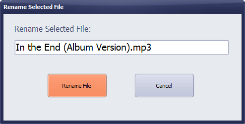

Get your music cleaned in less time withMusic CleanerThe free Music Cleaner
NOTE: Music Cleaner uses BASS Audio Library from www.un4seen.com
What are you waiting for:Clean your Music in minutesDownload the free Music Cleaner and start cleaning your music right away |
Need Help for this simple tool??
Here is a Kick Start Guide to get you going
The Main Window
Music Cleaner is designed on the idea of Ease of Access, See below the labeled main window of software to see the various options availabe in Music Cleaner.
Browse for Folder
Click browse for folder and select the folder you want to clean and click OK to load all the tracks in folder.
Settings
Settings window allows you to select Copy to and Move to folder. The Move/Copy features of Music Cleaner will copy/move to these folders.
About the Music Cleaner
This dialog shows the version information of Music Cleaner.
Rename File
Rename feature allows you to rename a file without leaving the software window.

Deleting a File
Music Cleaner Deletes files to Recycle Bin by default, but if you are cleaning a folder from Flash Drive or Removable Media the file will be permanently deleted.
Copying a File
Clicking the Copy Button or Ctrl + C will copy the selected file to the already set Copy To folder under settings.
Moving a File
Moving a file with music cleaner is easy. You can either click the move button or press the Ctrl + X shortcut key.
Searching a File
If you are looking for a specific file you can search for it using this new feature. To jump directly to the Search Box simple press the F3 Key on your keyboard.